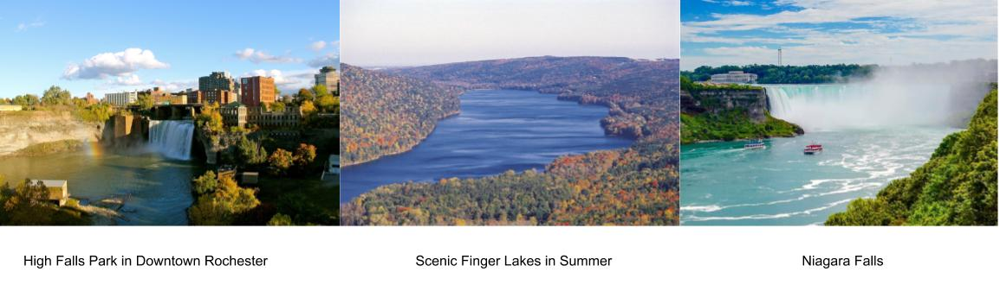

This REU Site is sponsored by an award made through the NSF.

RESEARCH EXPERIENCES FOR UNDERGRADUATES
Cultivating Next Generation Software Engineering Researchers
OBJECTIVES
The "Cultivating Next Generation Software Engineering Researcher" REU site at RIT immerses a diverse group of talent undergraduates in a exciting community working on software engineering and computer-supported collaborative work. Building on the research of an experienced team of faculty mentors, the interdisciplinary program focuses on three main themes covering the entire software development life cycle: Developers' Productivity, Communication and Collaboration, and Design and Creativity.
10 students will participate in a ten-week summer research program (06/03/2020-08/09/2020). The project includes mentoring by the experienced faculty members, technical seminars and workshops, student presentations, field trips and other professional development opportunities. They will gain skills and hands on experience on: software development, machine learning, natural language process, user study, statistics, network theory, and so on. REU students present their work at a unversity-wide undergraduate research symposium, and are encouraged to submit their technical papers as peer reviewed publications.
PROGRAM
Impartant Dates
How to apply?
Benefits
Housing
REQUIREMENTS
Dr. Mehdi Mirakhorli is an assistant professor in the Department of Software Engineering at the Rochester Institute of Technology. He will be the leading mentor for the REU projects related to Developer's Productivity
Dr. Yi Wang is an assistant professor in the Department of Software Engineering at the Rochester Institute of Technology. He will be the leading mentor for the REU projects related to Software Maintenance and Evolution.
Dr. Pradeep Kumar Murukannaiah is an Assistant Professor in the Department of Software Engineering at the Rochester Institute of Technology. He will be the leading mentor for the REU projects related to Software and Program Comprehension.
PROJECTS
Lead Mentor: Dr. Mehdi Mirakhorli
Archie
Archie aims to build a software architecture recommender system to help developers make better architectural design decisions in any given development context. Archie relies on advanced data mining techniques to learn context dependent analytics from open source projects and use such data to train recommender algorithms.
Desired Skills: Software Architecture, Reverse Engineerings, Recommender Systems; Data Analysis
Deliverables: A novel context-aware architecture recommender system; Prototypes; Datasets of contextual analytics
Effort: 9-10
Cyber-Security
This project focuses on developing catalog of Common Architectural Weakness Enumerations (CAWE) and the necessary algorithms to detect such weaknesses in the source code of a software application. A CAWE describes an architectural flaw in a software system resulting in a security vulnerability.
Desired Skills: Software Architecture, Software Security, Program Analysis
Deliverables: Catalog of common architectural weaknesses; Tools to detect architectural vulnerabilities; Recommendations; Benchmark datasets; Research Demo
Effort: 9-10
Lead Mentor: Dr. Mohamed Wiem Mkaouer
CommiClassy
CommiClassy is a classification tool. CommiClassy takes as input a commit message, analyzes its content and classifies it into one of software maintenance various categories (feature update, bug fix, design improvement, etc.) CommiClassy will help the software development team to better estimate their maintenance effort and support the better understanding of developers tasks distribution.
Desired Skills: Natural Language Processing, Machine Learning, Mobile or Web Development.
Deliverables: Classification Model of commit messages; Model website; Research or Tool Demo paper.
Effort: 8-9
uReview
Mobile developers receieve enormous amounts of review on a daily basis. This tools aims to distinguish the most critical and relevant reviews that they need to act on quickly. uReview is also a classification tool that classifies user reviews into various categories such as, user experience, reporting a bug, showing emotions, rating etc.
Desired Skills: Natural Language Processing, Machine Learning, Mobile or Web Development.
Deliverables: Classification Model of user reviews; Model website; Research or Tool Demo paper.
Effort: 8-9
Lead Mentor: Dr. Christian Newman
Lang4ref
Implementation of a programming language for automated source code refactoring. This project will involve the design and implementation of a language to help in software development activities. Student will learn about parser generators (ANTLR), language design, XML, intermediate code representations, and refactoring.
Desired Skills: Programming Languages; Natural Language Processing; Refactoring
Deliverables: Programming Language; Scripts; Research Paper
Effort:8-10
Part of Speech Tagger
Implementation of a part of speech tagger for source code identifiers. This project will involve the design and implementation of a part of speech tagger specialized to work more effectively (than traditional taggers) on source code entities such as variable names, function names, comments, and more. Students will learn about markov models, grammatical structure in both programming languages and in natural languages, XML parsing, intermediate representations, and static source code analysis.
Desired Skills: Natural Language Processing; Source Code Analysis;
Deliverables: Part of speech tagger for source code identifiers tool; Source repository and Dataset; Research Paper
Effort: 8-10
This REU Site is sponsored by an award made through the NSF.
City of Rochester and Nearby Attractions
